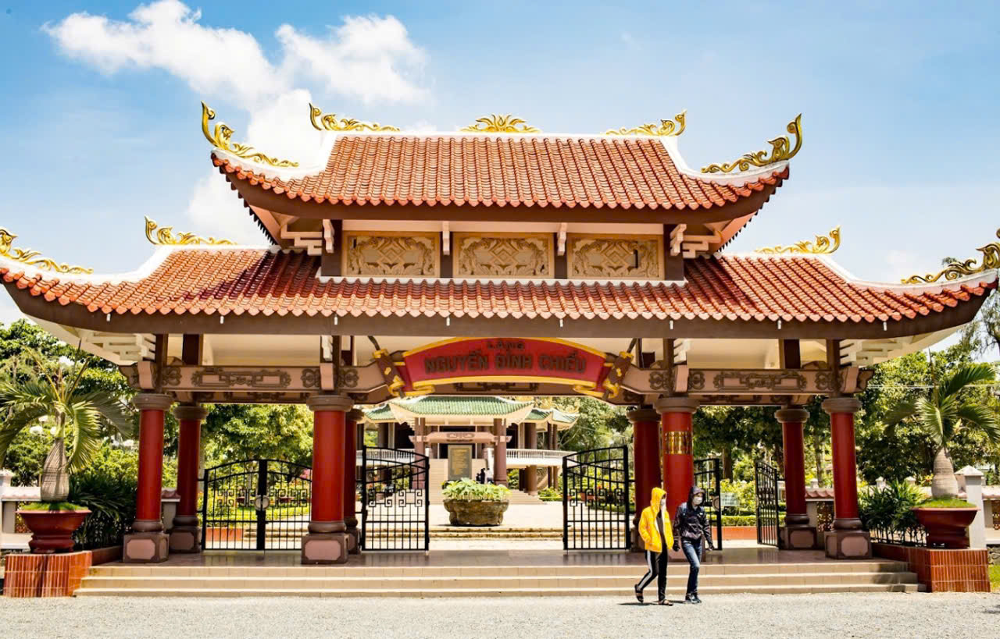
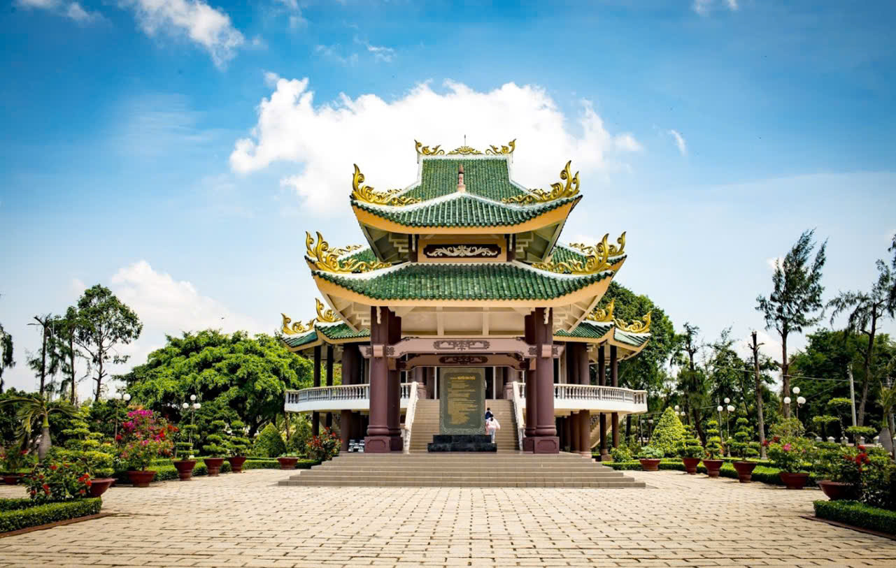
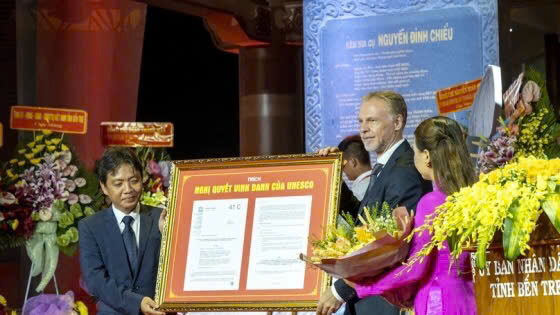
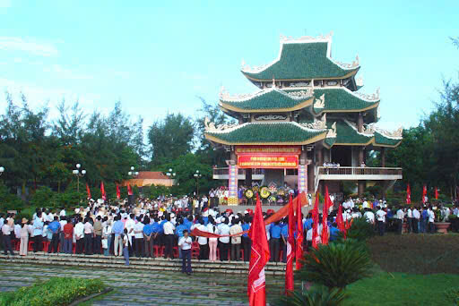

Khu di tích lăng mộ Nguyễn Đình Chiểu là một địa điểm du lịch Miền Tây quan trọng, không chỉ về mặt lịch sử văn hóa mà còn là nơi thể hiện lòng thành kính và biết ơn của người dân Việt Nam đối với nhà thơ yêu nước Nguyễn Đình Chiểu.
Khu di tích lăng mộ Nguyễn Đình Chiểu tọa lạc tại xã An Đức, huyện Ba Tri, tỉnh Bến Tre, từ lâu đã trở thành điểm du lịch tâm linh nổi tiếng và là niềm tự hào của người dân Bến Tre với nhà thơ yêu nước, người thầy giáo mẫu mực, đức độ, người thầy thuốc có tâm, có tài.
Đây là một quần thế kiến trúc bề thế tọa lạc trong khuôn viên có diện tích hơn 1,5ha, được trùng tu vào năm 2000, gồm cả khu lăng mộ cũ được xây dựng vào năm 1972.Công trình bao gồm: cổng tam quan, nhà bia, đền thờ mới, đền thờ cũ và khu mộ:
- Cổng tam quan khu lăng mộ mang phong cách kiến trúc truyền thống của các đình chùa Việt Nam với hai mái chồng, hình thuyền, lợp ngói âm dương màu đỏ gạch giả cổ, trên nóc và những bao lam, xiên, xà có đắp hoa văn, phù điêu ước lệ với nét dựng chân phương. Cột trụ tam quan to, vững chãi, sơn màu đỏ son.
- Nhà bia được xây dựng kiên cố cách đây không lâu với kiến trúc truyền thống, cao 12m, hai tầng mái. Tường ngoài trang trí hoa văn hoa lá cách điệu, tường trong đắp nổi tứ linh. Đỉnh mái đắp nổi biểu tượng bút lông. Giữa lòng nhà là tấm bia bằng đá có kích thước 2,65m x 2,7m x 1,8m. Mặt trước bia là bài văn ca ngợi công đức của Nguyễn Đình Chiểu và mặt sau tóm tắt tiểu sử của ông.
- Đền thờ mới được xây dựng năm 2000 – 2002 theo mẫu kiến trúc trùng thiềm điệp ốc. Đền có chiều cao 21m, chất liệu bê – tông cốt thép nhưng mái là ngói âm dương và trang trí trên tường hoàn toàn là hoa văn truyền thống.
- Đền có hai tầng
+ Tầng dưới là nơi trưng bày hình ảnh các vị lãnh đạo, đoàn khách quốc tế, nhân dân cả nước đến viếng và thắp hương.
+ Tầng trên là chân dung nhà thơ, được đúc bằng đồng, cao 1,6m, nặng 1,2 tấn. Trên 4 cột trụ có 4 liễn áp cột bằng gỗ, chạm trổ hoa văn tinh xảo
+ Hai bên tượng thờ là hai mảng phù điêu, miêu tả hình ảnh Nguyễn Đình Chiểu đọc bài văn tế Lục tỉnh sĩ dân trận vong tại chợ Đập (Ba Tri) năm 1883
+ Đền thờ cũ:
+ được xây dựng năm 1972 với kiến trúc hai tầng mái, lợp ngói âm dương, với tổng diện tích 84m2. Bờ nóc đền thờ trang trí hoa văn rồng, mây cách điệu. Bên trong là ban thờ. Hai cột chính đắp nổi hai câu thơ như ở đền mới, trong tác phẩm Dương Tử – Hà Mậu.
- Phần mộ: Bên trái nhà tưởng niệm là phần mộ của cụ Đồ với phu nhân. Gần bên đó là nơi yên nghỉ của nữ sĩ Nguyễn Thị Ngọc Khuê (Sương Nguyệt Ánh) con gái của nhà thơ, bà là một trong những nhà thơ, nhà báo rất nổi tiếng.
Năm 1990, khu lăng mộ của ông đã được nhà nước công nhận là khu di tích lịch sử văn hóa cấp quốc gia. Năm 2017, Khu di tích này tiếp tục được Bộ VH-TT&DL cấp Bằng công nhận Khu di tích văn hóa, lịch sử cấp Quốc gia đặc biệt.
- Hàng năm vào ngày 1.7, ngày sinh của cụ, đã trở thành ngày hội truyền thống văn hóa của người Bến Tre
- Lễ hội với nhiều chương trình phong phú như: lễ dâng hương, đọc văn tế, nói thơ Vân Tiên, thi hóa trang Lục Vân Tiên – Kiều Nguyệt Nga, trích đoạn cải lương Lục Vân Tiên – Kiều Nguyệt Nga, thi mâm xôi ngày hội, mâm cơm ngày giỗ, kéo co, nhảy bao bố, đập niêu.
 <